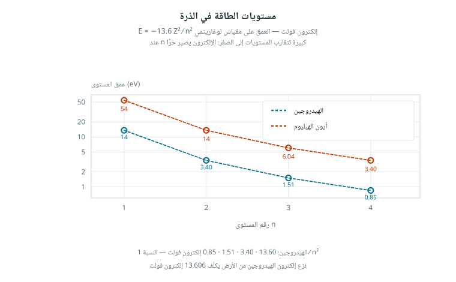

الذرة
Atom
الذرة أصغر وحدة من العنصر تحتفظ بهويته الكيميائية. تضم نواة تحمل معظم كتلتها، وتحيط بها إلكترونات تشارك في تكوين الروابط الكيميائية.
الذرة ليست كرة مصمتة بل بنية فراغية: النواة تحتوي 99.97% من الكتلة في 10⁻¹⁴ من الحجم، والإلكترونات توزّعها سحابة احتمالية تحكمها معادلة شرودنغر. الخواص الكيميائية تأتي من هذه السحابة لا من النواة: العنصر يحدّده عدد البروتونات، والتفاعل يحدّده ترتيب الإلكترونات وطاقتها.
والمدار ليس مسارًا دائريًّا. في النموذج الكمّي يُوصف الإلكترون بدالة موجية مربّعها يعطي كثافة احتمال وجوده عند نقطة، والمستويات طاقات منفصلة لا متصلة. هذا الانفصال هو أصل الطيف الخطّي: الذرة لا تُصدر إلا عند انتقالات بين مستويات محدّدة، فترسل فوتونات بترددات مضبوطة تُعرَّف منها أطياف العناصر.
كيف تعمل الظاهرة؟
الإلكترون يرتبط بالنواة بكمون كولوم جاذب يتناسب عكسيًّا مع المسافة، فتحلّ معادلة شرودنجر إلى مستويات طاقة منفصلة يحدّدها عدد كمّي رئيسي n. رقميًّا تكون طاقة المستوى في الهيدروجين E_n = −13.606·Z² ⁄ n² إلكترون فولت. ولا يستقرّ الإلكترون على مسارات دائرية، بل يوجد احتمال لتوزيعه حول النواة، ويتحدّد شكله بأعداد كمّية فرعية تحدّد نوع المدار (s، p، d). وعندما يقفز إلكترون من مستوى أعلى إلى أدنى ينطلق فوتون طاقته تساوي فرق المستويين، فتردده محسوب لا عشوائي.
العلاقة بالأرقام
طاقة تأيّن الهيدروجين 13.6057 إلكترون فولت، والانتقال من n=1 إلى n=2 يحتاج 10.204 إلكترون فولت أي فوتون بطول موجة 121.6 نانومتر، وهو خطّ لايمان-ألفا. وأيون الهيليوم He⁺ شحنته مضاعفة Z=2 فتصير طاقة تأيّنه 54.42 إلكترون فولت، أي أربعة أمثال الأولى بالضبط. وحجم الذرة نحو 10⁻¹⁰ متر بينما قطر النواة نحو 10⁻¹⁵ متر، أي أن نسبة الحجمين كالفارق بين ملعب كرة وحبّة عدس. وطاقة الإلكترون في حالة الأرض −13.606 eV تساوي −2.18×10⁻¹⁸ جول.
مفاهيم متقاربة
الذرة ليست الجزيء: الجزيء ذرّتان أو أكثر مترابطة كيميائيًّا، والذرة وحدة واحدة تبقى عنصرًا. والذرة ليست النواة: النواة بروتونات ونيوترونات، والإلكترونات جزء من الذرة لا ملحق خارجي إلا بوصف تقريبي. والأيون ليس ذرة متعادلة: نزع إلكترون أو إضافة إلكترون يغيّر الشحنة الكلية ويثير الخواص الكيميائية إلى حدّ كبير. والعنصر ليس الذرة الواحدة: العنصر صنف من الذرات بعدد بروتونات واحد، ويشمل كل نظائره.
حدود التطبيق
نموذج بور التاريخي يعطي أرقامًا صحيحة للهيدروجين ويكذب على ما هو أبسط منه: لا يفسّر بنية الذرات المتعدّدة الإلكترونات ولا الشدة النسبية للخطوط الطيفية ولا انشقاقها في مجال مغناطيسي (ظاهرة زيمان). والتعريف الكيميائي للذرة ينهار عند التسخين العالي حيث تتأيّن الذرات ونعمل ببلازما سلوكها جماعي لا فردي. وفي الجزيئات الكبيرة لم تعد «الذرة» وحدة مستقلة بل عقدة في سحابة إلكترونية مشتركة، فيُستخدم مفهوم المدار الجزيئي بدلًا من المدار الذري.

| الكمية | القيمة | المصدر |
|---|---|---|
| طاقة تأيّن الهيدروجين | 13.6057 إلكترون فولت | [1] |
| طول موجة خطّ لايمان-ألفا للهيدروجين | 121.567 نانومتر | [1] |
| طاقة تأيّن أيون الهيليوم He⁺ | 54.42 إلكترون فولت | [2] |
| قطر الذرة النموذجي مقابل قطر النواة | 10⁵ نسبة | [3] |
المصادر
- 1 Atomic Spectra Database — hydrogen energy levels and Lyman lines — NIST, National Institute of Standards and Technology. physics.nist.gov/asd · اطُّلع عليه 2026-11-16
- 2 Hydrogen energy levels — Bohr model and Rydberg formula — HyperPhysics, Georgia State University. hyperphysics.phy-astr.gsu.edu/hbase/hyde.html · اطُّلع عليه 2026-11-16
- 3 Atom — structure, quantum description — Encyclopaedia Britannica. www.britannica.com/science/atom · اطُّلع عليه 2026-11-16
استشهد بهذا المصطلح
الصيغتان مبنيتان من بيانات الصفحة نفسها: العنوان والتاريخ ورابط النسخة المنشورة.
الذرة — Atom. (2026). ديوان المعرفة — انفراد. https://infiradev.com/diwan/terms/atom.html
@misc{atom2026,
title = {الذرة},
titleaddon = {Atom},
howpublished = {{ديوان المعرفة — انفراد} — مرجع علمي عربي},
year = {2026},
url = {https://infiradev.com/diwan/terms/atom.html},
urldate = {2026-11-16},
note = {مراجعة علمية: تحرير انفراد الآلي — نُشر بأمر عبدالله الهويدي}
}
راجعه: تحرير انفراد الآلي — نُشر بأمر عبدالله الهويدي · 2026-11-16 · آخر تحديث 2026-11-17